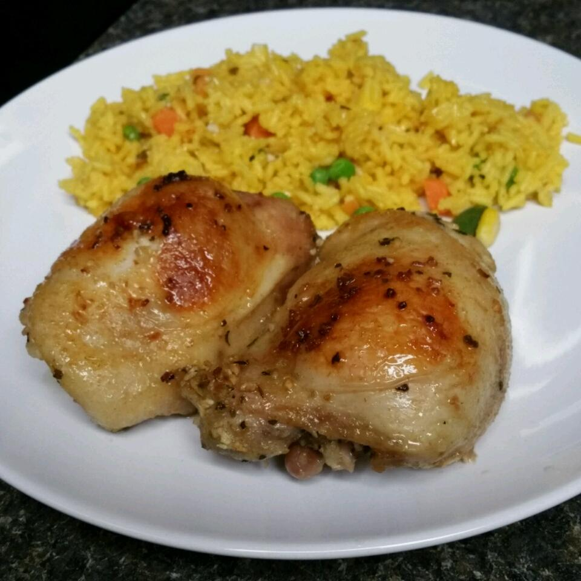

Mojo Roast Chicken (Pollo Asado)

Description
Mojo-marinated roast chicken, just like grandma used to make! Serve with white rice, which is the traditional way. It's also great with mashed potatoes or in sandwiches with Cuban bread or fresh rolls. You can use half the mojo recipe for a smaller bird, drumsticks, or thighs.
Ingredients
- 1/2 cup extra-virgin olive oil
- 1 1/2 teaspoons ground cumin
- 1 1/2 teaspoons kosher salt
- 1/2 teaspoon dried oregano
- 2 tablespoons minced garlic
- 3 tablespoons lime juice
- 3 tablespoons orange juice
- 1 whole chicken
Steps
- Heat the olive oil in a small saucepan over medium-high heat until very hot. While the oil heats, mash the cumin, salt, oregano, and garlic together into a paste in a heat-proof bowl; whisk the hot oil into the paste. Allow the mixture to cool slightly. Add the lime juice and orange juice; stir. Place the chicken in a large sealable bag; pour the marinade over the chicken and shake to assure an even coating. Refrigerate at least 4 hours, up to overnight.
- Preheat an oven to 375 degrees F (190 degrees C). Arrange the marinated chicken in a roasting pan.
- Bake the chicken in the preheated oven until no longer pink at the bone and the juices run clear, about 1 hour. An instant-read thermometer inserted into the thickest part of the thigh, near the bone should read 180 degrees F (82 degrees C).